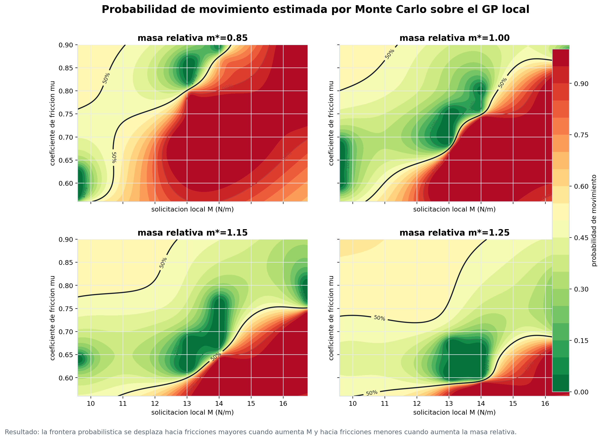
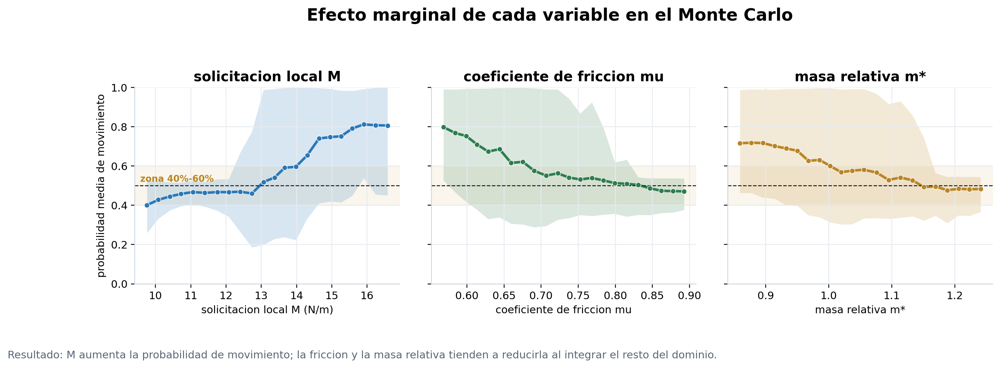
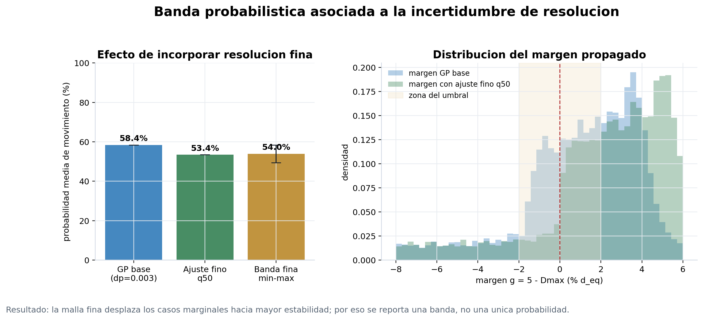
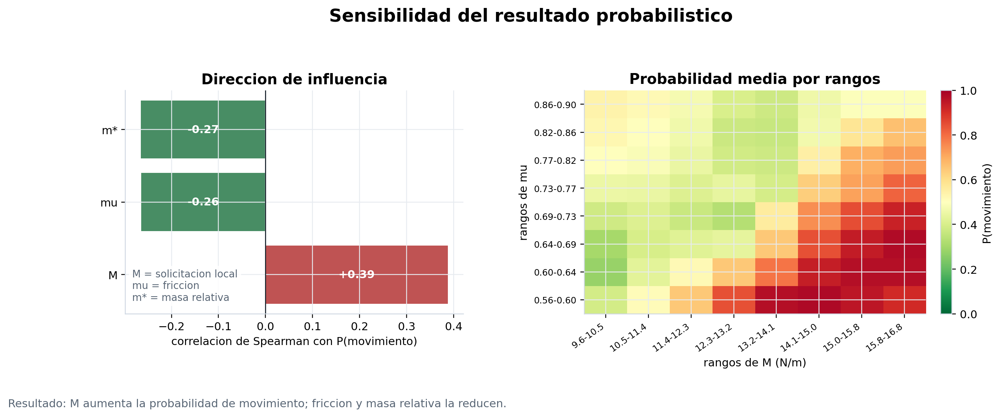
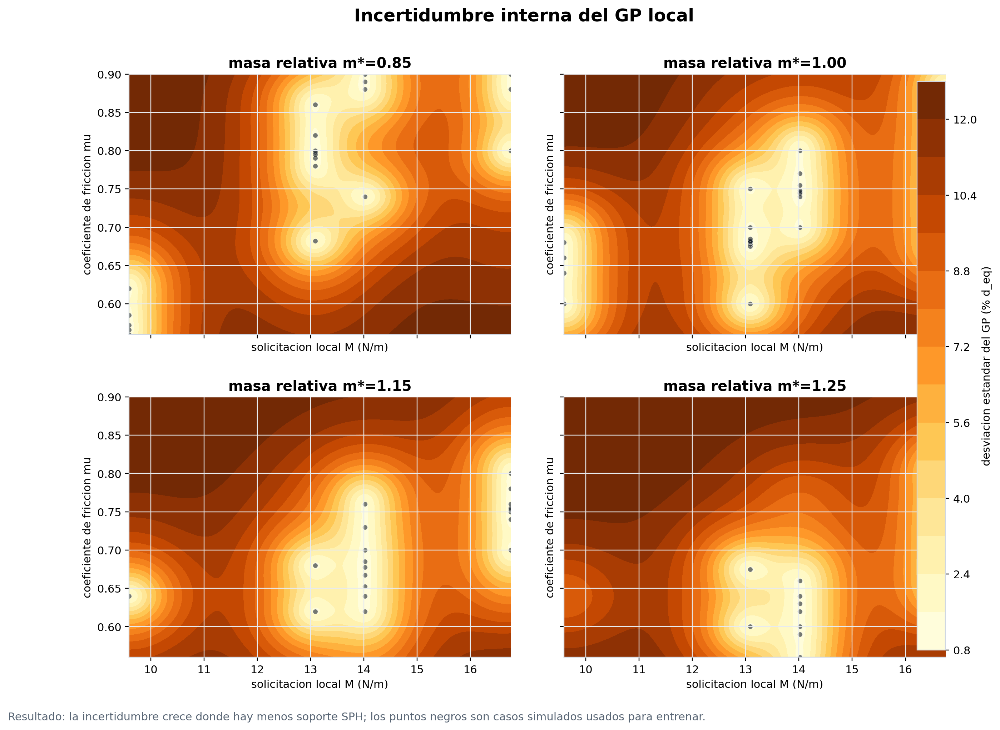

Monte Carlo sobre el modelo local
Propagación probabilística de la frontera usando el GP local, la banda de resolución fina y las variables transferibles.
Propagación probabilística
Monte Carlo usa el GP local final para recorrer combinaciones de solicitación local M, fricción mu y masa relativa m*. No agrega nuevas simulaciones SPH: convierte la frontera interpolada en una lectura probabilística bajo un dominio uniforme de parámetros.
Lectura clave: la probabilidad reportada no es una frecuencia experimental. Es la respuesta del modelo GP al muestrear el dominio de entrada; por eso se presenta junto con sensibilidad, incertidumbre interna y banda de resolución.
- Muestras
- 200.000 dominio uniforme
- P movimiento GP
- 58.4% base dp=0.003
- Ajuste fino
- 53.4% corrimiento mediano
- Banda resolución
- 49.5%-58.4% dp=0.002
- Zona del umbral
- 31.9% |g| <= 2% d_eq
- Variables
- M, mu, m* entrada local
Mapas y efectos


Incertidumbre propagada


